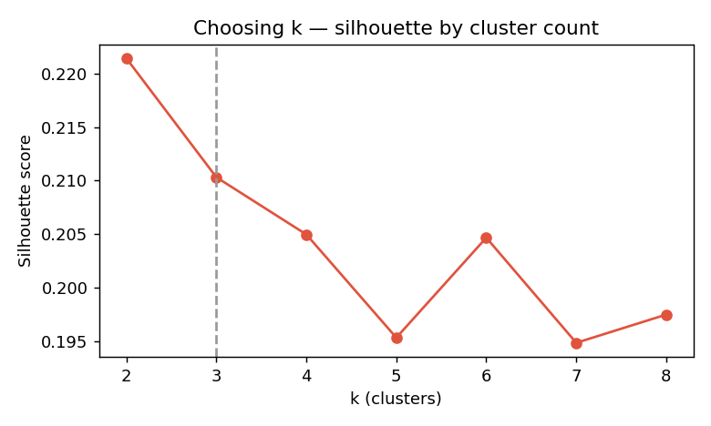
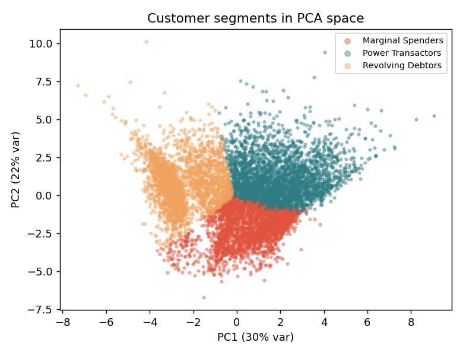

Banks earn most of their card profit from a minority of customers — and lose it when those customers quietly disengage. This project segments 8,950 anonymised cardholders by behaviour to answer three questions: who are the high-value customers, where is the churn risk, and what should the bank do about it?
01 — Data & preparationFrom 18 raw columns to a clean feature matrix
The dataset records six months of behaviour across 18 fields — balances, purchases, cash advances, payment ratios and tenure. After dropping the customer ID, 314 missing values (in MINIMUM_PAYMENTS and CREDIT_LIMIT) were imputed with the median. Monetary fields are heavily right-skewed, so they were log-transformed before every feature was standardised with StandardScaler — without this, a handful of whales would dominate the distance metric and distort the clusters.
02 — MethodK-Means, with k chosen for action
K-Means was run across k = 2–8 and scored with the silhouette coefficient. The score is modest and flat (≈0.21 at k=3) — expected for real behavioural data where customers blur into one another rather than forming neat balls. Rather than chase a marginally higher number, k = 3 was chosen because it maps onto three genuinely distinct, actionable personas. PCA (first two components ≈52% of variance) is used purely to visualise and sanity-check the separation.

Three personas, one paradox
| Segment | Share | Avg balance | Avg purchases | Avg cash adv. | % full pay |
|---|---|---|---|---|---|
| Power Transactors | 34.0% | $2,019 | $2,373 | $701 | 17% |
| Revolving Debtors | 34.2% | $2,386 | $143 | $2,115 | 3% |
| Marginal Spenders | 31.8% | $196 | $463 | $55 | 27% |
Power Transactors are the revenue engine — they spend the most and use the card most often. Revolving Debtors carry the highest balances and lean on cash advances, yet make almost no new purchases and only 3% ever pay in full. Marginal Spenders are light, situational users.

The 12-month tenure cliff
Tenure is overwhelmingly bunched at exactly 12 months — roughly 85% of customers — marking the anniversary point where renewal and disengagement decisions concentrate across every segment. This is the clearest, most actionable signal in the data: the moment to intervene is before month 12, not after.
05 — RecommendationsThree plays from three segments
- Protect the engine. Defend Power Transactors with premium rewards and a month-11 "Year 2" loyalty nudge that bridges the anniversary cliff.
- Convert balances safely. Offer Revolving Debtors balance-to-installment conversions to secure repayment and re-activate spend.
- Activate the habit. Nudge Marginal Spenders with category rewards (groceries, fuel) to turn occasional use into routine use.
What this analysis can and can't say
The silhouette score is modest, so the segments are useful generalisations rather than hard boundaries — many customers sit near the edges. The data is a six-month snapshot with no labels, so "churn risk" is inferred from behaviour, not observed outcomes. And K-Means assumes roughly spherical clusters, which real spending rarely forms. The findings are directional inputs for strategy, validated against business logic — not a predictive guarantee.